# Ⅰ. 语法（？）
# 一。程序执行
- 解释：由该程序执行操作（python）
- 编译：由该程序将语言翻译为机器语言，由编译出的程序执行操作（C）
# 二.printf 与 scanf <stdio.h>
\n 表示换行，如果要直接输出，输入 \\n 来转义
在写的程序中换行对编译器没有影响。
scanf 需要 & a, 但是 printf 不需要 &，double 在 scanf 中必须要用 % lf
scanf 里的非变量部分在输入时也必须输入，否则可能无法正确接收数据（空格为输入任意）
%d(ld): int(long long)
%f(lf): float(double,longdouble)
% u: unsigned long long // 即使是其他类型，也可以用 % u 输出，注意 ：
% c: 字符串 会自动扩展其他位，比如传入 - 1 就会使所有位的都 % e (E): 科学计数法 变成 1（传入 printf 的补码 (@int 类型是这样的) )
//double ff=1E-10 也是可以的，就是 1 的负 10 次方，输出要确定保留位数（%.3/4/5lf），会四舍五入。
float/double 的表达是离散的，不连续，遇到不能准确表达的会就近选择（精度越高，能表达的数的间隔越小）## 见下
#% d 其实时默认时 10 进制输出，不过输入可以是其他进制，会自动转化。
% d 后面没有空格，是只读取到整数结束为止，其他留给下一个变量
如有，则会顺便读取整数结束后的所有空格个，这是特殊的，用于防止误读空格
//% o：输出 8 进制（不会自带 0）
//% x（X）：输出 16 进制（不会自带 0x），x 的大小写决定了输出时的大小写（这点和 % e 一样）
16 进制两位就是一个字节（8bit）, 即一个 char，经常用于表答二进制 (方便变换)
8 进制是因为以前有 12 位的电脑，用 8 进制表达方便，现在一般用于单片机
# 三。关系运算
运算符：
+，-，/，*：略 // 当 +- 作为单目运算符时 (表示正负)，优先级最高且只能在后面。
%：取余 // 要获取一个运算的整数部分，直接整数运算，要获得余数，则取余。
=：赋值 // 在 C 中这是也是一个运算符有输出，唯一的自右向左。a=b=6 实际上是 a=(b=6)
也就是说 b=6 的输出值其实就是 6
#可以一行定义多个同类型的变量用 "," 隔开。
#不要嵌套赋值，belike:r=(r=r+3)*6*(r=r+4)
# 三。五. 复合赋值
++/--（递增 / 递减，这属于单目运算符）
count++/-- 实际上是 count=count+/-1
前缀时 (++/--a): 此句就已经是 a+/-1
后缀时 (a++/--): 此句输出还是 a，此句结束后 a+/-1
# 四。变量与常量
变量类型一旦定义就无法改变 // 没有初始值时是乱码（原来内存里的不知道什么玩意儿）
常量一旦定义无法改变（const int）// 通常全大写以区分
#定义时可以有运算
# 五。变量类型
# 总起
表示范围:char<short<int<float<double
输入输出时的格式化:% d，% ld，% lf
在内存中的大小：1 字节 (char)（8bit, 即 8 位），2 字节 (short)，4 字节 (int，long (32 位环境))，8 字节 (double，long (64 位环境)，long long)
//int 的大小其实也是不确定的，它等于电脑 CPU 的寄存器宽度（字长 (cpu 一次可以处理的数据长度) 以及总线）
在内存中的表达形式：二进制数 (补码)(int)，编码 (浮点数都是)
//sizeof () 用于输出该变量的所占字节数，不能在其中运算 (会被无视)，这是静态的：
sizeof(a++)=sizeof(a) //即使在后面printf("%d",a)输出也还是a而不是a+1
sizeof(a+1.0)//输出是8，因为整数和浮点数运算前会转换成浮点数，所以是浮点数的8
这不意味着有进行运算，只是判断了最后还是double类型而已
# 1. 整数（int (看编译器，即一个字)/bool）
一般用 int
是有范围的，还有 short (-32768-32767)，long，long long int (C99)
// 如果读取到负数，处理时又不能带符号，最后还要输出。那么可以单独 printf 一个负号，然后 x=-=x
//bool 是人为定义的，它只存在于 C99，即布尔量
整数的内部表达：
18-------00010010
三种方案：
1. 特殊标志（用第一位为 1 来代表负数运算时遇 + 则 -，乘除保留或变 0）
2. 取中间数，即 1000000 表示 0，更大为正，反之为负
3. 补码（其实就是溢出丢掉从头再来 8bit 当进到下一位时，会舍弃第九位的 1）
11111111（255，当作补码时为 - 1，因为 + 1=0）这样的好处是可以直接运算
// 对于二进制一个数的补码是 2<sup>n</sup>-1
对于一个字节的变量（char）：
000000000：0
111111111-10000000=-1~-128（补码）
00000000101111111=1127（少一位是因为 0 也要占一个表示方法，一共 2<sup>n</sup>）
// 由于 - 128 与 127 在二进制的表示上是连在一起的，所以：
char a=-128 | |
a-=1 // 此时输出的 a=127 | |
char b=127 | |
b+=1 // 此时输出 b=-128 |
这个循环是：
-10......127-128......-10
对于 unsigned char:
0-255-0-255
布尔类型 (bool)
需要 #include<stdbool.h>, 但实际上不会输出所谓的 true 或者 false, 本质上还是 1/0
# 2. 浮点数（float,double）
一般用 double
** 精确计算不能使用浮点数！！！** 只能用整型或者 bcd 码
这种码只用 4bit（2^4=16）, 也只表示 0~9, 它通过拼凑来得到数字，由于是表示 10 进制数，二进制运算时的结果可能要修正， 修正的规则是：当两个 BCD 码相加，如果和等于或小于 1001（10 进制的 9），无需修正。如果相加之和在 1010 到 1111 (即十六进制数 0AH～0FH) 之间，则需加 6 进行修正；如果相加时，本位产生了进位，也需加 6 进行修正。这样做的原因是，机器按二进制相加，所以 4 位 [二进制数相加时，是按 "逢十六进一" 的原则进行运算的，而实质上是 2 个十进制数相加，应该按 "逢十进一" 的原则相加，16 与 10 相差 6，所以当和超过 9 或有进位时，都要加 6 进行修正。
可以表示 +/-inf（无穷大 / 小，实际上是越界无法表达），nan（无效数字，比如 0/0，如果用整数，会报错，而浮点不会，只会输出 nan）
带小数部分，有 longdouble（C99）
float (4 字节，字长 32)：有效数字 7 位，在 0 周围 10<sup>-38</sup > 里无法表示
double (8 字节，字长 64)：有效数字 15 位，在 0 周围 10<sup>-308</sup > 里无法表示
// 浮点数中的 0 是单独拿出来表示的
浮点数的运算精度 (## 见上):
在运算超出 float 范围时，编译器会强制将其转换为 double，如果不想要这样，在数字后加 f
flaot a=1.345f
保留位数会影响结果，因为精度的问题，如果保留位数少，可能四舍五入后还是正确的，但是如果多起来，就会有误差。（注意，实际上内存中的就是不精确的，改变保留位数只是我们自己看的而已 ）
浮点数的内部表达：
1bit 用于表达正负
11bit 用于表达指数部分
剩下的都是分数部分和其他没有利用的部分
浮点计算是由专用硬件负责的
# 3. 字符（char）
也可以是整数类型，不一定都是字符（没有 “” 的话）
#字符串不能参与和整数或者浮点数的运算。
C 中使用 ASCII 编码所以：49=‘1’
字符加 n，就直接得到它后面第 n 个字符。
两个字符相减，可以得到它们之间的距离。
a+'a'-'A' 可以将大写转化为小写
a+'A'-'a' 可以将小写转化为大写
逃逸字符（\）：
\b : 回退一格，实际上是回去，但是不删除（这取决于终端），但是会用后面直接连接的字符覆盖它（该字符不会再次输出）
\t : 到下一个表格位（直接到下一个固定位置）
\n,\r : 换行，回车，这来自于早期打字机，到现在，没什么区别
getchar (): 读入一个字符，返回一个 intEOF (-1)，表示结束
使用 Crtl + C 强制结束
使用 Crtl + D (UNIX)/Z (WIN) 结束并输出 EOF
用户的直接输入实际上都在 shell 的缓冲区，程序运行时根据函数读取缓冲区中的数据 getchar 和 scanf 读取长度时不一样的（这也解释了为什么超出会顺延下去），这个缓冲区会有暂停的地方（用于等待你输入），如果使用了上面的快捷键，那么 shell 才会真正给出停止信号，给出 EOF
# 杂项
#整数之间的运算会直接舍弃所有小数部分，在计算过程中也是，但是整数与浮点数运算时，
整数会被转化为浮点数参与运算 // 但它还是整数，有时还会特意乘 1.0 来转化
(不如直接 double)
// 初始化时，浮点数应是 0.0
如果想要被当作纯二进制来看待，要写为：unsigned char（即不用补码）
这样表示范围就会变成 0~255，但是，此时不能表达负数
EX1. 断点
断点的一行是未被执行的。可以将鼠标移动到变量上查看此时该变量的值。 // 要调试运行
EX2. 交换变量（a,b）
t=a,a=b,b=t
// 整数类型除法会直接舍弃小数，可以用于整数求逆
# 4. 指针（单独放在下面）
# 5. 自定义类型
# 枚举
用于定义一些名字，而不用 const int 来：
enum 枚举类型名字，可不写{名字0，名字1...，Number}; | |
// 这些都是常量，操作时默认 int 且从 0 开始 (所以后的 number 就真的是这个枚举的有效数量，有个套路，见下),enum 本身不是一种变量类型（但是本质上是 int），它是声明一种变量类型 | |
要更改数值 | |
enum a{RED=1,YELLOW,GREEN=5,NumCOLORS} |
enum color {red,yellow,green}; | |
void f(enum color c);// 使用这个类型时，前面要加 enum（C++ 不用） | |
int main (viod){ | |
enum color t=red; | |
scanf("%d"，&t); | |
f(t); | |
return 0; | |
} | |
void f(enum color c){ | |
printf("%d\n",c) // 输出还是 1 | |
} |
自动计数的枚举：
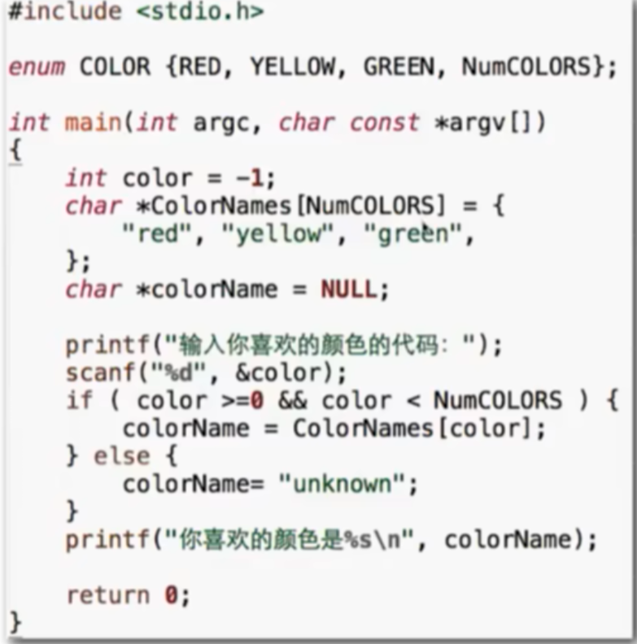
0 这里也能看出，实际上枚举很少作为类型使用，它作用在于：
-
枚举可以为一组整数常量赋予有意义的名称，使得代码更易于理解。例如，用
enum Weekday {MONDAY, TUESDAY, WEDNESDAY, THURSDAY, FRIDAY, SATURDAY, SUNDAY};定义了一周的天数。在代码中使用MONDAY比直接使用数字 0（假设周一被映射为数字 0）更直观地表示星期一，提高了代码的可读性和可维护性。 -
通过枚举定义的变量只能取枚举中定义的特定值，编译器可以在编译时进行类型检查，防止意外地为变量赋予不合法的值。例如，如果定义了一个枚举类型
enum Color {RED, GREEN, BLUE}，那么一个声明为该枚举类型的变量就只能被赋值为RED、GREEN或BLUE这三个值之一，而不能被赋予其他任意整数值。 -
集中管理常量：
当有一组相关的常量需要在程序中多处使用时，使用枚举可以将这些常量集中定义在一处，便于管理和修改。如果需要修改某个常量的值，只需要在枚举定义处进行修改，而不需要在代码中逐个查找和修改使用该常量的地方。
例如，如果要修改表示一周中某一天的常量值，只需要在枚举定义中修改相应的枚举值，而不需要在整个程序中搜索并修改所有使用该常量的地方。
-
易于扩展：
如果需要在现有枚举中添加新的常量，只需要在枚举定义中添加新的枚举值即可，不会影响到已有的代码逻辑。例如，在
enum Color {RED, GREEN, BLUE}的基础上，如果需要添加一个新的颜色YELLOW，只需要将枚举定义修改为enum Color {RED, GREEN, BLUE, YELLOW}，而使用该枚举的代码无需进行大规模修改。
# 结构体
格式：
struct 标签 { | |
int a; | |
char b[]; | |
float c; | |
...（其他有效变量定义，也可以是其他结构体） | |
} 结构变量（可以不只定义一个）; | |
// 一般三者至少出现俩 |
互相包含的结构体，要进行不完整声明：
struct B; // 对结构体 B 进行不完整声明 | |
// 结构体 A 中包含指向结构体 B 的指针 | |
struct A | |
{ | |
struct B *partner; | |
}; | |
// 结构体 B 中包含指向结构体 A 的指针，在 A 声明完后，B 也随之进行声明 | |
struct B | |
{ | |
struct A *partner; | |
}; |
即使两个结构体的成员一样，也会被当作两个不同的（前提是标签和结构变量要有不同）
使用：
struct Simple t1, t2[20], *t3; | |
// 分别表示一个结构体，结构体数组，指向该结构体的指针 | |
也就是说*t3可以指向t1 |
与 typedef 连用：
typedef struct | |
{ | |
int a; | |
char b; | |
double c; | |
} Simple2; // 注意，这里的 Simple2 是别称，结构体三者只出现了一个 | |
Simple2 u1,u2[],*u3 |
# EX
# EX 整数求逆
-
如果 %10，会得到个位数
-
如果 / 10，会去掉个位数
当去掉一个个位数后，会有新的一个个位数（原来的十位数），可以再 %10 读取
C 中不会自动换行，所以 while 中直接 printf 出来，连起来的就刚好是逆向的
但是 0 在开头也会输出。如果不要，那么用 ret*=10+a (读取的数) 的循环顶位，再输出。（0*10=0, 所以在读取到第一位有效数字前的 0 不会被输出，在之后的则有 * 10 顶出个位来加）
如果要正序且末尾有 0，那么只能使用 i-- 的方法，这需要知道是几位数。
这是不能判断原数字，而是那个 10<sup>n</sup>,n 可以先用 / 那个数读取长度，这时要用 pow (), 当然。也可以在读取循环时顺便来个变量 * 10
// 这里使用 while 代替 do-while，虽然 mask 是对的（直接加会因为 do-while 的无条件执行一次而多 10 倍，当然，可以事后 / 10），但是读取后原数没了，所以有了 t
# EX 类型转化
所有的类型转化都只是在运算中，不会改变这个变量以及它本身的类型
自动：
当运算符两边不一致时，会自动传化为较大的类型:
char--short--int--long--long long
int--float--double
但是对于 printf（不包括 scanf）:
小于 int 都会变成 int
float 都会变成 double
强制：
优先级高于所有其他运算
(int) 32 // 注意安全性，不要越界
# 六。条件判断（if/switch）
# 1.if-else
if (x>100) { | |
代码1 | |
}else if (x>1) { | |
代码2 | |
}else { | |
代码3 | |
} |
级联 if-else：
必需范围从大到小，因为实际执行的只有一个，而且顺序执行。
如果都要判断，要用多个 if（能不用就不用，会多次判断）
// 不同于 python，c 中的 if，else 都是就近匹配，不是依赖缩进，所以最好加上大括号
# 2.switch-case
switch (type) { //type 必须是整数类型 | |
case 常量: // 这个常量可以是常数，也可以是常数计算的表达式 | |
xxx C99中还可以用定义的常量 | |
break | |
case 常量: | |
xxx | |
break | |
default: // 当上述一个都没有时跳转 | |
xxx | |
} // 这时相当于一个级联 if |
switch 本质上是一种跳转，如果不 break，会直接向下执行，而且
这种跳转只有一次，跳完后所以 case 都当作不存在。
（break 会直接跳出整个 switch）
ps：比较像批处理中的标签一样的玩意儿（？）
# 七。循环 (for/while)
# 1.while
while (条件){ | |
循环体 | |
} | |
// 只要条件依然满足，就会循坏，不会执行下面的代码 | |
//if 只有一次判断，而 while 有多次 |
在调试时，可以随便在 while 中 printf 些什么，用于直观判断运行情况，最后记得注释掉就行。
数位数的算法：
1. 用户输入 x
2. 初始化 n=0
3.n++
4. 如果 x>0，回到 3
5. 否则 n 为结果
// 一般来说，在进入 while 前，循环体要先执行一次，这样才会是 “循环”，这就是：
do-while 循环
do
{
循环体
}while(循环条件)； //先执行一次，然后判断
//不要忘记封号 也可以说是先执行，再判断，while则反之
也就是说，do-while 至少执行一遍，while 可能一遍都不做
EX:rand () 可以召唤随机整数，使用方法：
#include<stdlib.h> | |
#include<time.h> | |
... | |
int main(){ | |
srand(time(0)); | |
int a=rand()%100+1 // 这使得数在 100 以内 | |
... | |
} |
# 2.for
for (初始条件;循环条件;每轮动作){ //这个动作接到每次循环结尾
循环体 //i的值可以在初始化中定义
} 但是只有C99才行，初始条件可以 省略
循环可以有两种计数方式：
for (int i=0;i<5;i++) 或者 for (int i=1;i<=5;i++) 都是循环 5 次
for 循环实际上与 while 是一样的！！！任何 for 都可以改写成 while 循环 。
// 如果是要固定次数的循环，那么用 for;
// 如果必需执行一次，就用 do-while 循环；
// 其他都用 while
EG: 判断素数
...
isPrime=1 //这里实际上是证伪，所以初始为1，用来避免反复输出，for(i=2;i<x;i++) { //掐头去尾是这样的
if （x%1==0）{
isPrime=0; //实际上不break也行，但是会反复赋值
break; //continue只会直接跳到下一轮循环
}
if isPrime==1{ //这里也可以不用isPrime,直接判断i==x
printf("是素数\n"); 看有没有完整执行for,是否有break掉。
}else{
printf("不是素数是\n");
}
}
...
# 3. 循环的嵌套
注意，循环的控制变量必需不一样
比如，判断 100 以内的素数：// 是素数改成 printf
可以在之前的代码上套一个
for (int x=2,x<=100,i++) {} //记得也要x++
输出 50 个素数：
int cnt=0;
while (cnt<50){} //输出后记得cnt++
也可以用 for (x=2;cnt<50;x++) // 这时删掉最后的 x++
EX. 接力 break:
这需要一个变量（exit）, 开始是 1，当满足条件时将其赋值为 1，随后多个 break 加上 if，判断 exit 是否为 1（这是为了防止未完成就 break）
也可以使用 goto, 用法和命令行差不多，但是定义标签时的：在后面。
这玩意儿最好只用在快速跳出多个循环（要不然乱跳容易乱）
# 八。逻辑运算 / 条件运算 /，
# 1. 逻辑运算
运算符：
！：非！a：是 a 就 false，不是则 true
&&：与 全部 true 则 true
||：或 一个 true 即可
优先级：
()> ! > 关系运算 > && > || > 赋值运算
方向：
自左向右，如果已经不成立，就不会接下去判断，所以，赋值运算不要写到里面，可能不会执行，即发生短路。
# 2. 条件运算
运算符：
(条件) ? 条件满足时的值 : 条件不满足的时候的值 // 相当于 if,else
优先级：
只大于赋值运算
嵌套条件表达式：
自右向左结合（快跑，没有可读性的玩意儿）
# 3. 逗号表达式
优先级：
最低，比赋值还低，要用到必需通过括号提升优先级
运算方式：
取右边值，比如 a=(1,2), 此时 a=2。
一般不运算，平常在 for 中来加入多个每轮动作（也不是运算.jpg）
# Ⅱ. 函数与数组
# 函数
// 为了避免重复代码（同时方便维护），或者精简主函数
# 1. 定义函数
一般来说，main 函数写在最下面，因为编译器是自上而下看的，否则有可能会编译不通过（这看编译器），如果一定要 main 在前面，可以先来个函数原型声明
//(其实就是将函数大括号以外的部分复制一份，加个封号然后单独放在 main 函数前面（事实上可以写在里面，原型声明里也可以不用写或乱写参数名称，只要类型定义是一样的就行（不建议））。定义的部分一定要和声明一致，否则 error，如果不声明，且定义部分在 main 函数下面，那么有些编译器会猜测该函数的返回类型，如果和下面实际定义不相同，有可能也会抛出 error (发生类型冲突))//
函数原型声明不能冲突，但是可以放空，表示不确定，这时假设与实际冲突，会按照实际。
（这样做会没有对输入类型的检查，可以在 double 中传 int, 不会报错但是值不对，如果确实没有，加 void）
函数中不能定义函数，但可以原型声明。
int (返回类型) hanshuming (函数名) ()(参数表){
// 定义函数还可以用 void (中文意是没有)，表示没有返回值，int 有返回值，return 必需带值，size_t 就是 unsign int 类型
// 参数表里逗号分割，看到这个就可以断定这段代码是函数，所以即使是空的也要有，输入时是按顺序复制的
函数体
return 变量
// 返回主函数的结果 int 就是说这里 return 的变量是 int 类型
}
调用时写为:
hanshuming (变量) ;
// 即使不输入什么值，也要括号，否则会 warnning
return:
1. 停止函数执行，并返回值
2. 返回一个表达式
#一个函数中可以有多个 return 语句，这会导致不是单一出口
调用有返回的函数却不赋值也是可以的，不会警告或报错。
当然，没返回的肯定不能赋值
# 2. 参数传递
可以传递：
字面量，变量，函数返回值，计算结果
有强制类型转换，如果声明的参数是 int，传入的是 double, 这个 double 会变成 int (warning)，反之也是
C 语言只能传值，而不能是变量 (即使是指针，实际上也只是传了个地址数据，也不是把指针本身传递过去)
形式参数与实际参数
函数声明的就是形式参数，实际参数是你调用时传过去的数据 (不是变量)
本地变量 (在函数内部定义的变量就是这个函数的本地变量，包括参数)（局部变量 / 自动变量）
每次函数运行会产生独立变量空间（栈帧？）
变量的生存期和作用域：
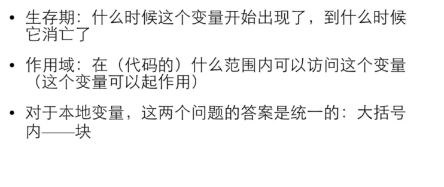
注意：C 语言没有 jacvascript 的闭包特性，所以完全不能跨。
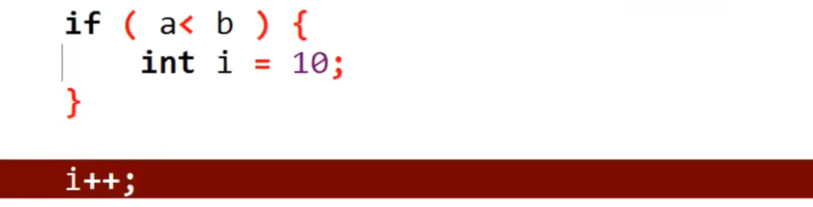
在 {} 中定义的参数，生存期和作用域也仅限于 {} 中这里即使在 else 中，也不能访问。
如果是 [static]( 静态存储期 ，全局变量默认有。定义这个，只能改变生存期，不能改作用域，该不可见还是不可见。它的作用在于当这个函数被多次调用时，它的值不会被初始化（不在栈中）), 生存期会变成整个程序，但是作用域没变化
局部变量优先原则：当在函数中的其他类型的 {} 中定义一个在之外定义过的变量，在 {} 中出现，调用的是其中定义的那个，不是原有，比如：
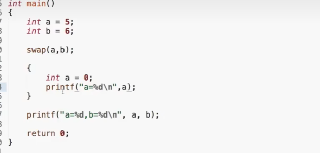
直接写一个 {} 一般用于调试
这里输出的两个 a 不一样
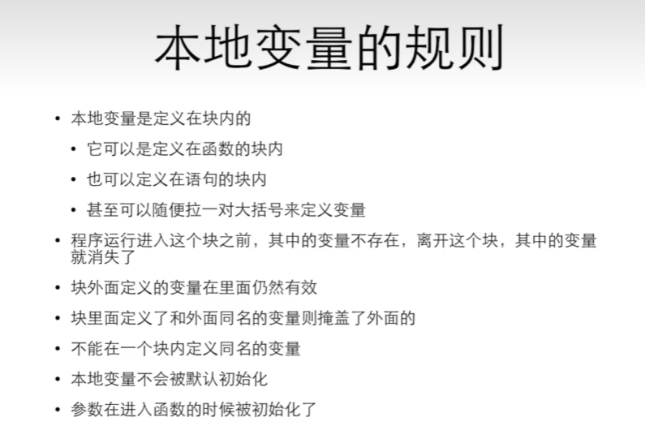
# 数组
# 1. 定义数组
类型 数组名 [元素个数] eg.int num [100] // 索引从 0 开始是第一个，所以只有 0~99
赋值：
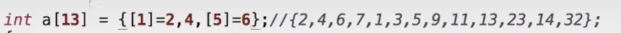
前面一种写法仅限 C99
定义后必需遍历数组初始化
C 中有个特殊写法，就是 count [number]={0}, 效果和遍历写 0 是一样的
输出时也是循环遍历
集成化初始时的定义：
int a[10]={[0]=2, [2]=3, 6} // 没有得到值的，都是 0；没有指定索引的，顺延上一个 |
例题：统计数组
# 2. 数组运算
要改变数组中的某一个，使用 search 函数
loc=search(x,a,sizeof(a)/sizeof(a[0])); // 不要 [] | |
if (loc!=-1){ // 这个函数没找到会返回 - 1，实际上是初始值，这个函数遍历了每个位置，有就加 1 | |
printf("%d在第%d个位置上\n"，x,loc); // 得到的其实是索引，不是位置，因为初始不是 0 | |
}else{ | |
printf("不存在"); | |
} |
search () 要提供大小，其实是因为数组作为函数参数时，是作为指针，只传了第一个元素的地址
# 3. 数组的大小
sizeof 数组 ：得到字节数（对于 int，/4 才是数组内元素的数字）
对于任意类型，可以用：
sizeof(a)/sizeof(a[0])
# 4. 数组的赋值
数组变量本身不能被赋值，也不能将数组赋值给数组
只能遍历：
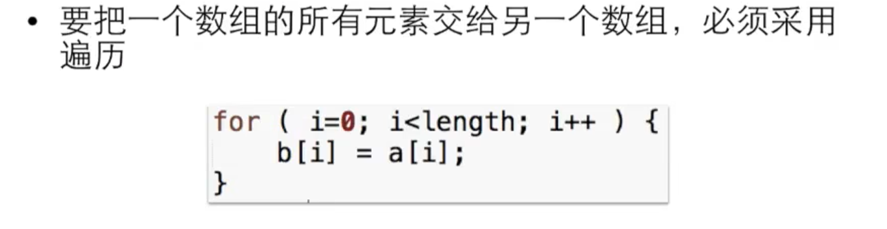
素数还有一种求法（但是看起来比之前的更长，所以没写在那个 cpp 里面）
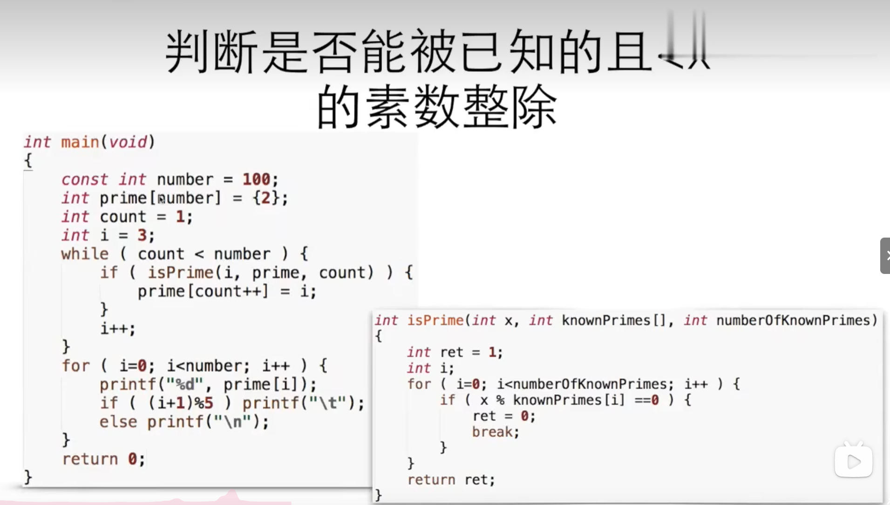
当发现一个素数时，将他加到 prime 里面去，用 cnt++ 就是可以先写入这个位置，再移到下一个，这样可以从第一个开始写，这是因为非素数都可以由比他小的素数乘以某个数得到。
// 那个 (i+1)%5 是为了控制一行输出 5 个
其他算法：
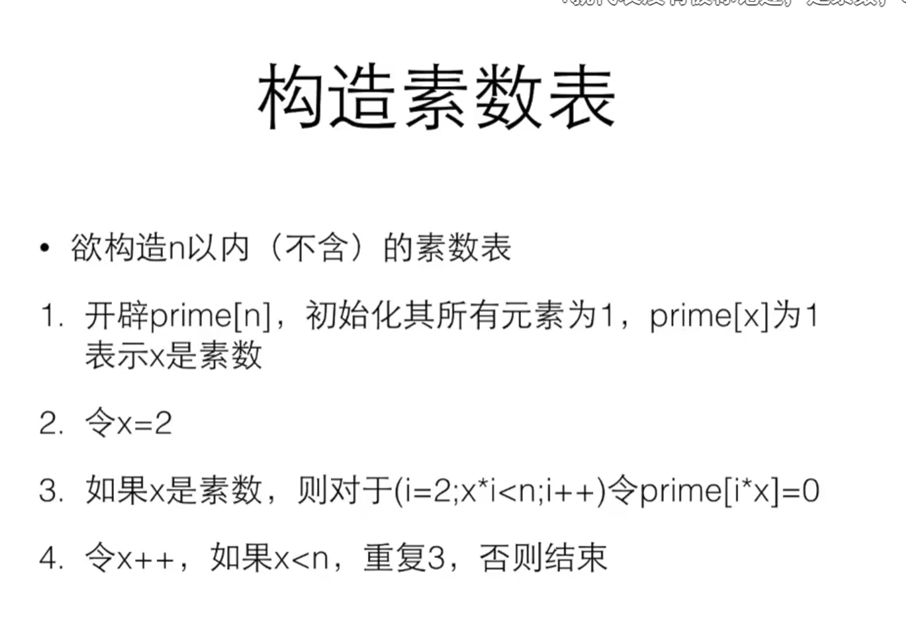
就是每使用一个数，就在数组中排除它的倍数
就是：
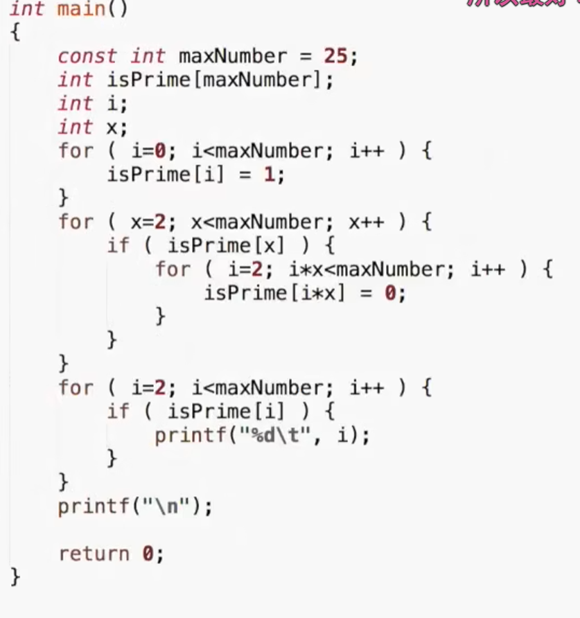
// 赋值为 0 表示不是素数，每个数都判断过去是否是它的倍数
// 第一个 i 用于初始化，后面拿来遍历输出
# 5. 二维数组
int a[3][5] // 一般认为是三行五列（这是内存中的放法）, 不能 a [i,j]，这样里面是逗号表达式，实际上是 a [j] | |
集成化初始定义： | |
a[][5]={0,1,2,3,4},{2,3,4,5,6} // 内存中都是直接填的，所以写成一维数组也可以 |
# 6. 字符数组与字符串
char word[]=['H','e','l','l','o']; // 字符数组 | |
char word[]=['H','e','l','l','o','\0'];// 字符串，本质上还是字符数组，C 语言中实际上没有叫字符串的东西 | |
或者 | |
char word[]=['H','e','l','l','o',0] | |
字符串就是以0结尾的字符，它表示字符串的结束（不算在字符串长度中，但是占空间(有索引)），如果要读入特定个数，记得位数+1，留给0 | |
特殊的： | |
char word[]="";是一个空字符串“\0”，而不是普通的字符数组 |
# 字符串函数 <string.h>
可以对普通的字符数组操作
| 序号 | 函数 & 目的 |
|---|---|
| 1 | strcpy(s1, s2); 复制字符串 s2 到字符串 s1。 |
| 2 | strcat(s1, s2); 连接字符串 s2 到字符串 s1 的末尾，作为返回值。 |
| 3 | strlen(s1); 返回字符串 s1 的长度 (不包括结尾 0, 用 char 时 sizeof 就包括，其他类型不用 sizeof，单位不一样) |
| 4 | strcmp(s1, s2); 如果 s1 和 s2 是相同的，则返回 0；如果 s1<s2 则返回小于 0；如果 s1>s2 则返回大于 0。空格，结尾的 \0 也会算进去，实际上这个函数就是挨个比较，不相等时输出这两者之间的差值。 |
| 5 | strchr(s1, ch); 返回一个指针，指向字符串 s1 中字符 ch 的第一次出现的位置。 |
| 6 | strstr(s1, s2); 返回一个指针，指向字符串 s1 中字符串 s2 的第一次出现的位置。 |
# strcmp:
它的原型，可以是：
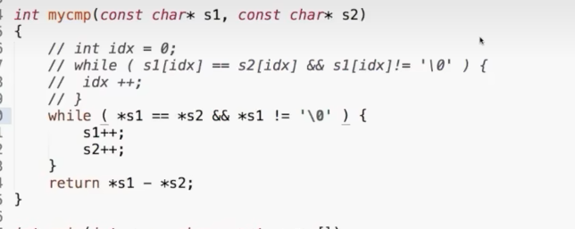
# strcpy:
因为有时不知道这个指针的作用域，防止突然消失，拷贝一份
char *strcpy(char *restrict dst,const char *restrict src);
//restrict表明src和dst不重叠（C99），否则会指向同一个地方
这个函数会返回 dst 值
使用时要申请内存:
char *dst = (char*)malloc(strlen(src)+1)// 为 \0 提供空间 | |
strcpy(dst,src) | |
...... | |
free(dst) |
它的原型是：
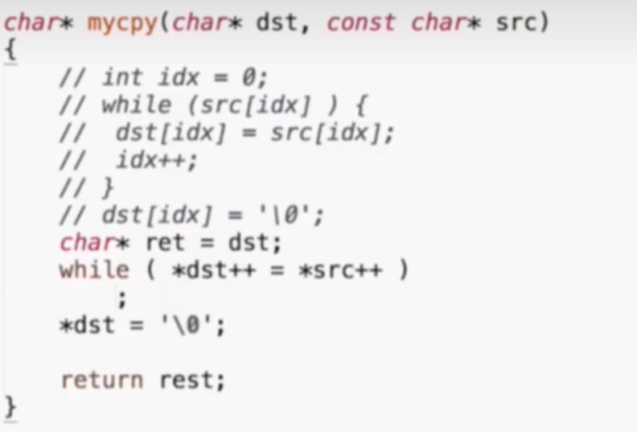
然后可以传入俩数组（代码里的 const 防止自赋值（指向同地址））
rest 应该是 ret, 这是因为此时的 dst 指向最后的元素，不能直接返回它
要先用 ret 记录好初始位置
# strchr:
还有一个 strrchr 表示从右边开始找
如果要找第二个：
char s[]="hello"; | |
char *p =strchr(s,'l'); | |
p = strchr(p+1,'l'); // 这表示从第一个‘l’后一个开始找 |
输出找到的字符前的一段，可以：
#include<stdio.h> | |
#include<string.h> | |
#include<stdlib.h> | |
int main(){ | |
char s[] = "hello"; | |
char *p=(char*)malloc(strlen(p)+1)//malloc 返回指针 + 1 也是按类型 | |
strcpy(t,p); | |
printf("%s\n"t); | |
free(t); | |
return 0; | |
} |
后一段：
#include<stdio.h> | |
#include<string.h> | |
#include<stdlib.h> | |
int main(){ | |
char s[] = "hello"; // 这只是一个字符数组，这里不能是字符串 | |
char *p=strchr(s,'l'); | |
char c=*p; // 暂存原来的值 | |
char *t=(char*)malloc(strlen(s)+1); | |
strcpy(t,s); // 将被提前结束的 s 字符数组 copy | |
printf("%s\n",t); | |
*p=c // 将 s 数组还原 | |
free(t); | |
return 0; | |
} |
这是因为字符串函数的操作都是以 \0 作为结束，所以这里实际上是提前结束了 s 字符串
# strstr:
还有 strcasestr (不区分大小写的查找)
基本格式：
char *strstr(const char *s1,const char *s2); | |
char *strcasestr(const char*s1,const char *s2); |
# 字符串变量 “字面量”
char *str ="Hello""World" | |
/* 实际上是六个字节，因为编译器会自动加 \0。连续的字符串会自动拼成一个 | |
等价于。这种写法等同于上面那个字符串的写法（编译后）。*/ | |
char *str ="Hello\ | |
World" // 注意，这样上下俩行的连接会带上 Tab, 这样防止太长，不好看。 |
但是不能用字符串来运算
字符串数组前默认有 const, 不能修改
在编译时就已经确定，如果存在字面量相同的，那么会指向同一个地方
想要修改，就只能是普通的字符数组（实际上它们储存的位置都不一样）
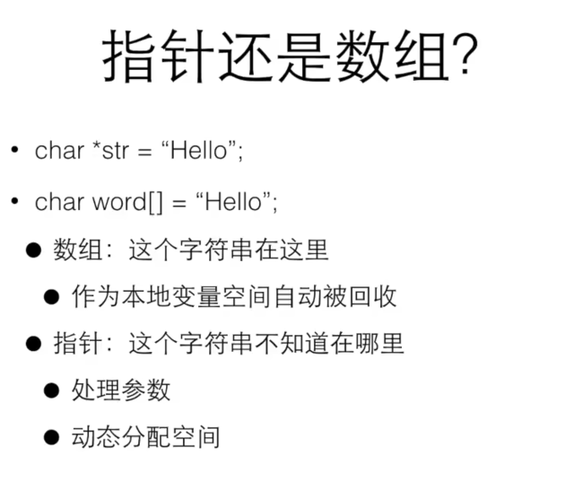
char * 不一定是指向字符串，它也可以用来指向普通的字符数组，
用它来直接定义的，一定是字符串（这一句必需初始化，否则只是普通的指针）。（不能是空指针）
字符串数组输出时，用 % s
一个 % s 只会读到空格前，继续输出才行。
// 这是不安全的，因为不知道实际输入可能有多长，可能发生数组越界
限制输入可以用 %7s (表示最多读 7 个，多余的会放到下一个 scanf（如有），这意味着可以不用回车同时输入上下多个 scanf), 但是若某一个要输入的长度小于 7，必需在输入完这个后回车再继续
# main 函数的参数：
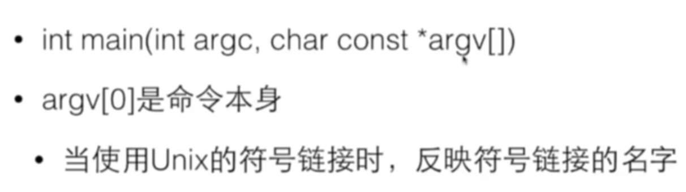
argc [0]: 一定是 a.out（该程序名）, 程序刚开始时的输入会放到后面（空格分隔）
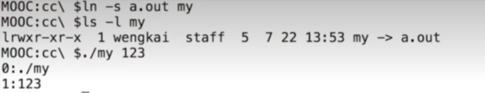
这是使用符号链接来启动程序（符号版快捷方式？）
# Ⅲ. 不知道是什么
# 一。辗转相除法
(更为高效)
算法内容：
如果 b=0，计算结束，a 就是最大公约数，否则，计算 a 除以 b 的余数，让 a=b, 而 b
等于那个余数，回到第一步
演示：
a b t
12 18 12 // 这里实现了交换
18 12 6
12 6 0
6 0
所以，最大公约数是 6
# Ⅳ. 指针
# 从入门到放弃
# 1. 取址符 (&)
int i=&i //会有warning,强制类型转换可以消除
//在64位下typeof(&i)是8个字节，32位下和int一样4字节
地址输出用%p
取地址不能有运算
数组的指针默认是指向第一个元素的地址，数组在内存中是连续的。
数组越界，要传递数组大小，就是因为数组本身就是一个指针，没有边界检查。
# 2. 指针类型的变量
int *p = &i //p 在内存中得到的是 i 的地址，称为 p 指向 i | |
int* p,q和int *p,q 是一样的，此时q都是普通的int // 不存在 int * 类型！！ | |
定义只再次使用*p就是解引用，值为指向的地址的内容这里类型就是int（每次都要）。 |
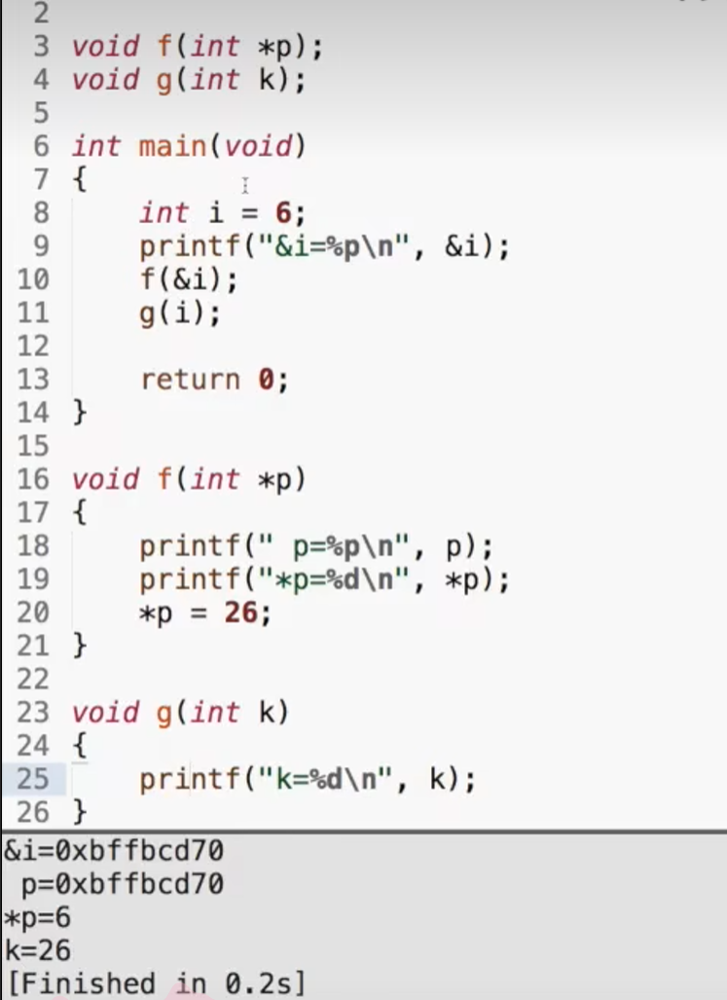
*p 就是 i, 这样就可以访问外面的变量
scanf 就是把你传入的数据写到那个变量的地址上，如果不加 &，会把变量名当作地址，写到别的地方去（没有类型检查）
# 3. 指针使用
# 1. 在函数中交换变量
使用 * 变量就可以间接对 main 函数的变量改变
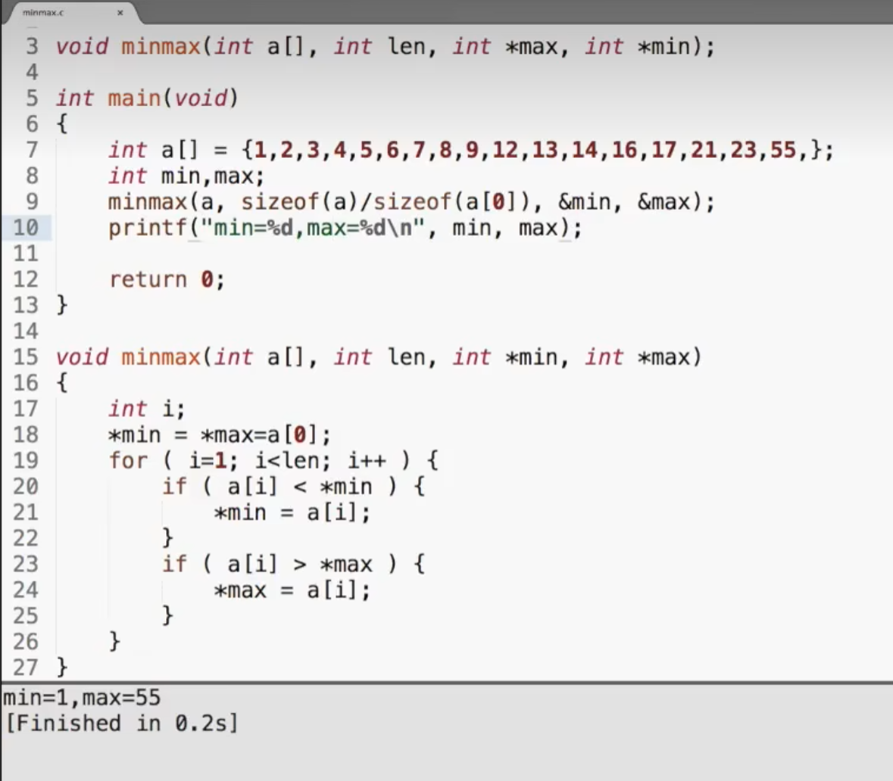
指针常用于返回值，尤其是多个 (return 只能返回一个)
为了区分返回，函数返回状态值，指针返回数据值 (所以最后常来 return 0)
注意：
*p 必须先指向一个变量，再 * p 赋值，否则那个值会被当成是地址
# 2. 传入数组
传入的实际上不是数组，而是指向这个数组的指针 (C 语言中只能传数值是这样的)
函数参数表中的数组，实际上是个指针，在 [] 中写东西，是完全没有用的
这就是说，你可以直接将数组传入一个指针
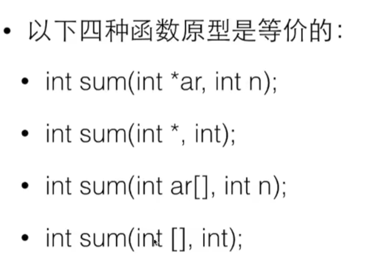
数组变量是一个特殊的指针，单个单元都是变量，而且在内存中是连续的（与指针数组不一样）
数组 = const 指针 (所以数组不能互相赋值)
int b []-----int const *b，此时不能用 b++,
在 C99 中：
被 const 的指针指向的变量可以变，但是不能是通过 const 指针
int i;
const int* p1 = &i; //实际上是const *p,也就是*p/i（解引后的值）不能改，但是p（地址）可以改
int const* p2 = &i; //同上
int *const p3 = &i; //p（地址）不能改，但是*p/i可以
const int b []: 表示里面的所有都是常量，这可以在变量原型中写，就不会改变传入数组的值
# 3. 指针运算
# +，-
p++, 实际上是加了一个类型的大小 (+1 就是加一个类型大小，sizeof)
*p++(常用于数组类的连续操作)： ++ 的优先级比解引用操作符 * 的优先级高。在表达式 *p++ 中， ++ 操作符会先于 * 操作符被执行。这意味着 p 指针首先会增加，然后 * 操作符会解引用增加后的指针。
但是，由于 p++ 是一个后缀递增操作符，它返回的是递增前的指针值。所以，即使 p 指针在 * 操作之前已经递增了， *p++ 表达式仍然会返回递增前的指针指向的值。
人话：表达式的值还是 * p, 但是这句之后指针指向 *(p+1)
*q=a[0]--------*(q+1)=a[1] //* 是单目运算符，所以加 () | |
指针也可以相减，是两者之间的距离（地址差/sizeof） |
# 其他运算
<，<=，==，>，>=，!=(地址大小比较，数组是递增排列的)
# 0 地址
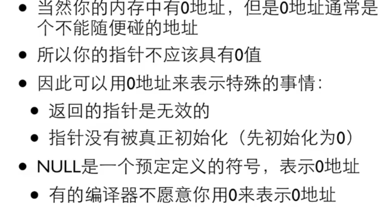
所有进程都有 0 地址（都是虚拟地址），也是不能写的，有的系统，不能读。
特殊事情包括：1. 初始化（没赋值就崩溃）
2. 返回值（这事成不了！）
NULL: 必须全大写，有的编译器只能用 NULL，0 和 NULL 反而不一样
# 赋值
必需同类型，因为不同类型的 sizeof 不一样。
# 4. 指针类型转化
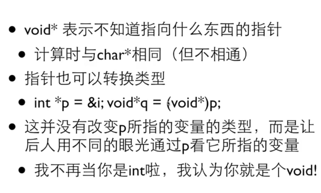
注：强制类型转化的作用都只限于该句
# 5. 指针用处
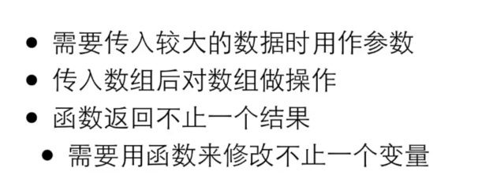
# 4. 动态内存分配
1.malloc()
C99 之前不能用变量定义数组大小，所以：
int *a=(int*)malloc(n*sizeof(int)); //malloc, 用于分配内存，需要 & lt;stdlib.h> | |
// 用法： | |
malloc(size_t size) // 不能传递类型，所以 sizeof (以字节为单位)，返回的是 void*,(int*）// 上面就是指针赋值，前面用于指定类型 (这样才能赋值) | |
// 就是在转化 | |
然后就可以当数组了 |
如果申请空间失败，会返回 0 或者 NULL，还能用于推出循环，比如
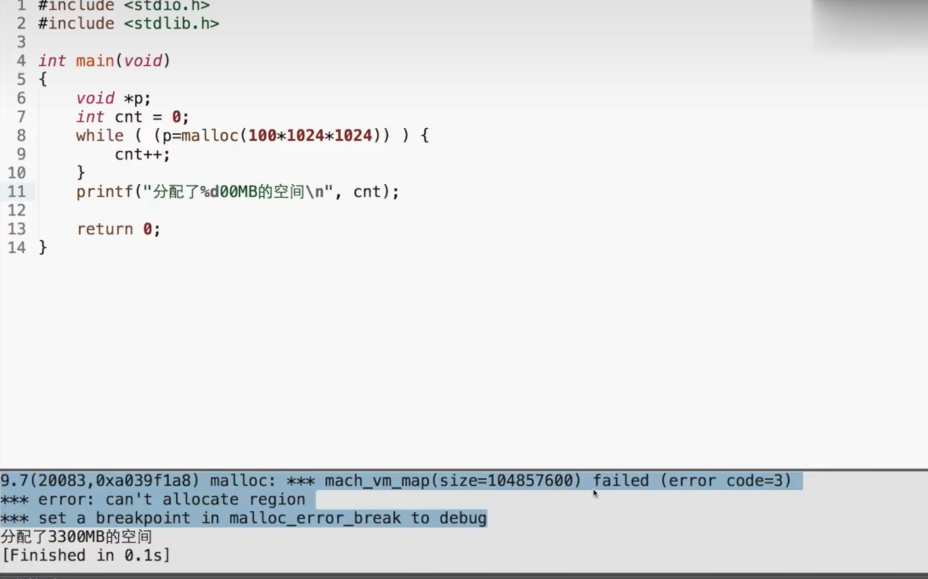
会报错，但是不会终止程序，还会向下进行。
2.free()
只能还申请空间 (不是申请的不行) 的首地址，否则会报错并终止（有运算也地搞回来）
free (NULL)：什么事情都不会发生，因为指针一般习惯上会初始化为 0，要是没用到，也不会报错
切记：malloc () 最后一定要接 free (), 但是不要再次 free
# EXTRA
来自菜鸟教程 (?)
# 指针数组：
把 ptr 声明为一个数组，由 MAX 个整数指针组成。因此，ptr 中的每个元素，都是一个指向 int 值的指针。
#include <stdio.h> | |
const int MAX = 3; | |
int main (){ | |
int var[] = {10, 100, 200}; | |
int i, *ptr[MAX]; | |
for ( i = 0; i < MAX; i++){ | |
ptr[i] = &var[i]; /* 赋值为整数的地址 */ | |
} | |
for ( i = 0; i < MAX; i++){ | |
printf("Value of var[%d] = %d\n", i, *ptr[i] ); | |
} | |
return 0; | |
} | |
还可以有字符串指针数组 | |
char *a[]={"Hello","World","aadfdfefcrverg"} | |
//a[1]=Hello,a[2]=World... |
也可以用一个指向字符的指针数组来存储一个字符串列表，如下：
#include <stdio.h> | |
const int MAX = 4; | |
int main (){ | |
const char *names[] = { | |
"Zara Ali", | |
"Hina Ali", | |
"Nuha Ali", | |
"Sara Ali", | |
}; | |
int i = 0; | |
for ( i = 0; i < MAX; i++){ | |
printf("Value of names[%d] = %s\n", i, names[i] ); | |
} | |
return 0; | |
} |
这跟普通数组相比，地址是不连续的，运算方法一样。
字符指针数组可以达到和枚举相似的效果：
char *s[3]={"apple","bpple","cpple"}; | |
int a; | |
scanf("%d",a); | |
print("%s",s[a]); | |
// 这样就可以将数字 (作为索引) 对应上字符串 |
# 指向指针的指针：
纯套娃，定义就是 int **var 等
这种变量解引用一次后得到的就是被指向的指针，仍然是个地址
#include <stdio.h> | |
int main () | |
{ | |
int V; | |
int *Pt1; | |
int **Pt2; | |
V = 100; | |
/* 获取 V 的地址 */ | |
Pt1 = &V; | |
/* 使用运算符 & 获取 Pt1 的地址 */ | |
Pt2 = &Pt1; | |
/* 使用 pptr 获取值 */ | |
printf("var = %d\n", V ); | |
printf("Pt1 = %p\n", Pt1 ); | |
printf("*Pt1 = %d\n", *Pt1 ); | |
printf("Pt2 = %p\n", Pt2 ); | |
printf("**Pt2 = %d\n", **Pt2); | |
return 0; | |
} |
# 返回指针的函数：
定义：int * myFunction ()
C 语言不支持在调用函数时返回局部变量的地址，除非定义局部变量为 static 变量
#include <stdio.h> | |
#include <time.h> | |
#include <stdlib.h> | |
/* 要生成和返回随机数的函数 */ | |
int * getRandom( ) | |
{ | |
static int r[10]; // 这样结束后只是不可见，不会销毁，可以传递其值 | |
int i; | |
/* 设置种子 */ | |
srand( (unsigned)time( NULL ) ); //srand () 用于初始化 rand (),null 其实是默认 | |
for ( i = 0; i < 10; ++i) // 获取时间是为了保障 rand () 的随机，否则多次调用时可能会重复 | |
{ | |
r[i] = rand(); | |
printf("%d\n", r[i] ); | |
} | |
return r; | |
} | |
/* 要调用上面定义函数的主函数 */ | |
int main () | |
{ | |
/* 一个指向整数的指针 */ | |
int *p; | |
int i; | |
p = getRandom(); | |
for ( i = 0; i < 10; i++ ) | |
{ | |
printf("*(p + [%d]) : %d\n", i, *(p + i) ); | |
} | |
return 0; | |
} |
# 函数指针：
定义
typedef int (*fun_ptr)(int,int); // 声明一个指向同样参数、返回值的函数指针类型 | |
fun_ptr a=max; // 声明这个类型，只是为了在这句定义里检查类型是否符合，其实就是类型检查，还有就是方便修改，不用一个一个改类型，同时方便创建 | |
... |
# 回调函数：
函数指针作为某个函数的参数
可以根据不同的条件调用不同的函数，比较灵活
#include <stdlib.h> | |
#include <stdio.h> | |
void populate_array(int *array, size_t arraySize, int (*getNextValue)(void)) | |
{ | |
for (size_t i=0; i<arraySize; i++) | |
array[i] = getNextValue(); | |
} | |
// 获取随机值 | |
int getNextRandomValue(void) | |
{ | |
return rand(); | |
} | |
int main(void) | |
{ | |
int myarray[10]; | |
/* getNextRandomValue 不能加括号，否则无法编译，因为加上括号之后相当于传入此参数时传入了 int （函数的返回值）, 而不是函数指针 */ | |
populate_array(myarray, 10, getNextRandomValue); | |
for(int i = 0; i < 10; i++) { | |
printf("%d ", myarray[i]); | |
} | |
printf("\n"); | |
return 0; | |
} |